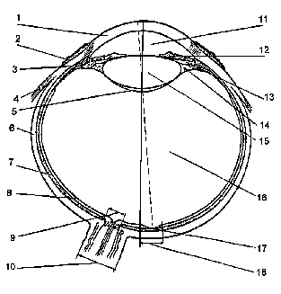
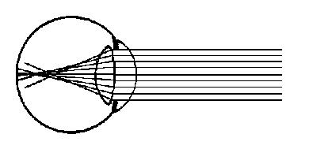
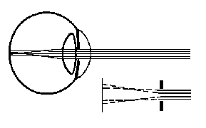
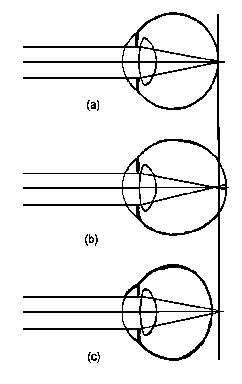
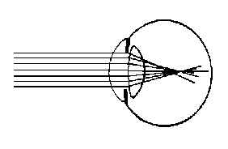
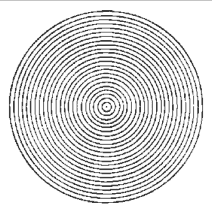
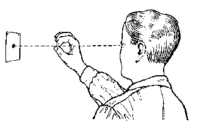
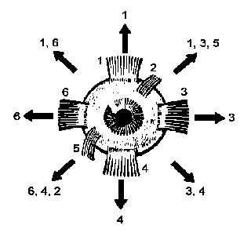

The principal difficulties which confront the shooter during aiming are determined by the
inherent characteristics of the organ of vision -- the eye -- and its work as an optical apparatus during the aiming process.
It is well known that the aiming process makes very exacting demands upon the vision,
since consistency and degree of accuracy are directly dependent upon the sharpness of vision
and the conditions determining them. Therefore, it is necessary for the shooter to have a
knowledge of certain of the optical properties of the eye. He must know the degree and the
conditions under which the optical imperfections of the eye can affect the accuracy of aiming.

Figure A2-1. Horizontal Cross Section of the Human Eye (Right Eye)
1. Cornea (transparent, grasslike
portion of coat of eyeball).
2. Conjunctiva (mucous membrane which lines eyelids and is
reflected onto eyeball).
3. Ciliary muscle (smooth muscles, controlling alteration of
crystalline lens).
4. Muscle of eyeball.
5. Space posterior to crystalline lens.
6. Sclera (toughest of the three membranes, forming the outer
protective and supporting layer of the eye ball).
7. Choroid (vascular coat of the eye).
8. Retina (innermost tunic of the eye, containing receptors, rods
and cones).
9. Optic disk (blind spot of retina).
10. Optic nerve (transfers images from retina to visual nerve
centers located in the brain).
11. Anterior chamber (filled with aqueous humor).
12. Iris (opening in center is called the pupil, contains groups
of smooth muscles that dilate and contract pupil).
13. Posterior chamber (filled with aqueous humor).
14. Suspensory ligaments (zonule of Zinn).
15. Crystalline lens (transparent biconvex body enclosed in
transparent sheath, suspended from ciliary body by suspensory
ligaments).
16. Vitreous (transparent jelly-like substance contained within
transparent membrane close to retina).
17. Fovea central is (a pit in the middle of the macula lutea).
18. Macula Lutea (point of clearest vision, contains greatest
number of cones).
B. OPTICAL PROPERTIES OF THE HUMAN EYE.
The human eye as a visual analyzer makes it possible to distinguish rather accurately
between colors, form, dimensions, degree of illumination, and the location of objects in the
immediate environment (Figure A2-1).
1. The forward portion of the eye, which is turned toward the light, contains a light-refracting apparatus which transmits the image to a light-sensitive membrane -- the retina; this apparatus consists of a system of refracting media and surfaces -- the cornea, the crystalline lens, the aqueous humor, and the vitreous humor filling the optical cavity. (The light-refracting apparatus also includes the ciliar humor and the iris, which has an opening, the pupil, in the center of it.)
2. The degree of illumination, the form and location of the objects surrounding us are perceived by the internal light-sensitive membrane -- the retina -- which is linked by means of the optic nerve to the cerebral cortex. In order to obtain the correct visual perception of any object, the image of it upon the retina must be sharp. This is achieved as a result of the eye's ability to adapt its light-refracting system and thus to obtain on the retina a sharp image of objects located at varying distances from it.
3. In our eye, the role of photographic lens is played by the crystalline lens which is a transparent, biconvex body similar in form to an ordinary lens. When the eye observes objects located at varying distances, the curvature of the crystalline lens changes, as a result of which the eye's optical system adapts by reflex and very rapidly to the perceiving of objects located at varying distances from us. As a result, the image produced on the retina is a sharp one and this makes it possible to perceive correctly and sharply the form and outlines of the objects surrounding us. This ability of the eye to adapt to the viewing of various objects located at varying distances from the eye by means of changing the curvature of the crystalline lens (changing the refraction) is called accommodation.
4. Consequently, the human eye is constructed in such a way that it is not able to
see sharply, simultaneously, objects located at varying distances from it. Therefore, it is not possible when aiming, to see with identical sharpness the sight alignment and the target which is located at varying distances from the shooter's eye. Understanding this, one must not strain the vision excessively in vain attempts to see everything sharply at the same time.
5. The normal eye in the state of rest is set up to perceive distant objects, that is, it is set to infinity. In order to switch the vision to perceive objects located close by, it is necessary to exert a definite muscular effort. The mechanism of accommodation lies in the fact that the ciliary muscle contracts, and the crystalline lens takes on a convex form, thus increasing its refraction.
As a result, when aiming, one must not abuse the eye by shifting the glance with
excessive frequency, from one point of clear vision to another. For example, a shift of focus from the rear notch and the front sight to the target, and back again. The protracted muscular effort expended under such conditions leads to the rapid and considerable fatiguing of the oculomotor muscles. For the same reason, the shooter must not aim for long sustained periods. He must make sure that in the intervals between sequences of aiming, he does not concentrate his glance on some object, but looks momentarily into the distance "with an absent-minded stare" in order to rest his eye muscles.
6. When there is a change in the force of natural illumination, the level of the eye's
light-sensitivity changes and the eye adapts to the different amount of light entering it. A role similar to that played by the diaphragm in a camera is played by the pupil, the opening or aperture in the middle of the iris. Under the action of various eye muscles, the diameter of the pupil can be made narrower or wider. It is this action which regulates the amount of light entering the eye and which improves the depth of focusing of the image upon the retina when the pupil becomes narrower. The question of the speed at which the pupil reacts to a change in illumination is also deserving of attention. When the light changes to greater brilliance, the pupil contracts much more rapidly than it expands after finding itself again in conditions of lesser brilliance. For example, the contraction of the pupil to the stable level of average light intensity takes about 5 seconds, but the process of its reverse dilation after the stimulus created by low intensity light requires about 3 minutes. From this the shooter must also make the corresponding conclusions: in order to preserve the eye's working efficiency without reducing the accuracy of aiming, before or during aiming, one must not look at brightly illuminated objects or, moreover, subject the eye to the action of sharp transitions from light to shadow. In the intervals between shots, one must not rest the eyes by closing them. Between shots, it is necessary to rest the eyes, but the best way is to look at distant dull surfaces having even tones of gray, green, or blue.
C. FUNCTION OF THE HABITS OF THE NORMAL EYE.
All shooters should make a conscious effort to improve the condition of their eyes in the
intervals when they are not actually aiming by allowing the habits of normal sight of function. The following will give an idea of how this should be done. There are three things that every healthy eye does: Blink, center its attention (called Central Fixation) and shift.
1. Blinking, the first habit of normal sight an involuntary action. The blink is the
quick, light, easy closing and opening of the eye, and it is done intermittently by every normal eye. The rate of blinking varies with people and also varies with the use an eye is put to. You blink more, for instance, when you look at something brilliant than you do when you look at something soft in tone.
a. Frequently the dividing point between a normal and abnormal pair of eyes
is its impulse to blink under a given situation. If the eyes are perfectly normal, they will blink; suppression of the act of blinking shows a tendency to become abnormal.
b. The action of the eyelids in blinking is most essential to normal eyes and
sight. The fluid that keeps the eyes moist is produced by a small gland called the lacrimal gland under the outer portion of the upper lid. When one blinks, this fluid is washed down and over the eyeball and keeps the eye moist.
This moisture has several functions:
(1) There is a definite antiseptic and cleansing action of the fluid.
(2) The brilliance of the eyes and their ability to reflect light are largely due to the fluid on their surface.
(3) The fluid is essential to the cornea, which is the small translucent
front part of the eye. Since the cornea has no blood vessels, it needs this fluid to keep it moist or it may develop corneal ulcers.
(4) When particles of foreign matter get into the eye, the lacrimal fluid
tends to float them off, while on an eye that is dry, the particles may stick and imbed themselves.
(5) In cold weather, frequent blinking tends to keep the eye warm. An
eyeball can be very uncomfortable when cold.
(6) In strong wind or when the weather is very dry, blinking comforts
and protects the eye. Under these conditions, one should blink frequently, almost continuously, because the fluid is lost so rapidly.
(7) In the short interval of blinking, the muscles of the pupil have a
chance momentarily to relax their tension.
(8) Blinking also enables the eye to move slightly and thus allows the
recti muscles to make the small amount of movement essential to their well-being, since motion
is necessary to the health of any muscle.
(9) The circulation of the lymphatic fluid around the eye is aided by
blinking, and the eye is strengthened by this good circulation, just as any body is benefitted by keeping the circulation of the blood active around it.
c. Blinking is not an interruption of continuous vision. Continuous vision is
the illusion that a normal eye produces, authentic in effect but nevertheless an illusion. When an image falls on the retina, there is another image or an after-image produced. In other words, the image remains on the retina for a short period longer than the image is kept before the eye. It is as if your image in the mirror, stayed there a moment after you had gone away.
Thus, it is not necessary for the eye to be seeing actively all the time in order
to produce the illusion of seeing constantly. In fact, nothing in the body works more than half time or so much as half time. More than half of the time of every organ is consumed in the repair and replacement of its own tissue and the elimination of its waste products.
d. The frequency of the visual impressions made by the eye is between thirty
and forty images per second in the average person. Therefore the blink does not interfere with
constant vision. It is possible for the eye to blink so frequently that the eye is closed half of the time and yet it will see as much as if it were open all the time.
e. In fact, blinking increases the actual amount of time you may actively see,
since failing to blink constitutes strain and this may reduce the number of images from thirty or forty to twenty or fewer images per second. There is no single instance where blinking interferes with sight. It is a natural, constructive performance and improves the eye. If for some reason the eye has not been blinking normally, the resumption of normal blinking improves its vision.
f. Do not confuse a wink or a spasm of the eyelid with blinking. A spasm of
the eye lid is a forceful, involuntary constriction of the lid and usually involves the muscles around the eye as well as the muscles of the eyelid and is frequently associated with some nervous disease. A blink is a light, easy, smooth, barely noticeable movement of the eyelid.
g. If you have formed a habit of looking too fixedly at things, remind yourself
to blink. Blink consciously and often. Condition your reactions until you again have the
unconscious blink.
2. Central fixation: The second habit of normal sight is to have the eye and the
mind so coordinated that they fix on a small area at one and the same time. In other words, when you look at an object you should localize your attention, fasten it on the one small area, not scatter it.
a. For example, when you look at a page of print, you cannot see the whole
page clearly. If you fix your eyes on the upper right-hand corner of the page, you can see that clearly, but the remainder of the page, although it is within your field of vision, is much less clear. To see the last word on the page clearly, you will have to shift your eyes so that they are directed straight at that word.
b. The same is true if you take words quite close to each other. To see the
first word of a line clearly you must look directly at it, and to see the last word on that line it is necessary to shift the eye. The same is true if you want to see the second word on the line clearly. You can see it well enough to read it, but you do not see it perfectly clear when you are looking at the first word. A definite strain is involved if you try to see it that way. This is true down to the very smallest degree of space.
c. There is a basic, structural reason for this. The Macula Lutea, the only
part of the eye that sees perfectly clear, is in the center of the retina and is no larger than the head of an ordinary steel pin. This dot of perfect sight is placed in the eye like a point at the bottom center of a bowl whose sides slope gently like an arena. This one tiny point has clear, strong vision. When your vision departs from that point, there is a tremendous reduction in clarity of sight. There is, instead, blurred, collateral vision. And this is increasingly blurred as you continue out from the center until near the outside edge there is only perception of general shape, color and motion.
d. Since only this point, the Macula Lutea, has perfectly clear vision, only a
very small area can be seen clearly at one time. But the movement of shifting is so swift that the illusion of seeing a large area is given. The images falling on the Macula Lutea are carried swiftly into the visual brain centers, one succeeding another with such rapidity that there are thirty or forty and sometimes more images a second, thus creating the illusion of a whole picture in the brain.
e. This ability of the brain to carry successive images and so produce the
illusion of clearly seeing the whole object or a considerable area is an impressive and beautiful fact, but it is also a cause of trouble to the shooter. One comes to believe that the eye itself can see a large area clearly, and so misuse slips in because any attempt to do this is to use the eye without focusing!
f. "Large Area" means trying to see for example, two words or more at a time.
The healthy, normal eye habitually sees only a very small area at given moment. The mind and
the eye normally coordinate perfectly on each word or point of observation with no effort or
impulse to see more, just as it does when one is writing.
If the practice of seeing a large area at one time persists over a sufficient
length of time, the ability to focus perfectly is lost and the blurred vision naturally to the collateral area is the only vision possible. It is then necessary to retrain the eye and mind to look at only a small area in order to again have central fixation without which no vision can be clear and normal.
g. One can read indefinitely without undue tiring or harming the eyes in any
way if the eyes are relaxed and the vision is localized. But, if the seeing power of the collateral field of vision is used, the eye is straining and there is a resulting fatigue and loss of efficiency.
The fact that the eye sees clearly only a very small area at any one time cannot be over stressed. In the awareness of this fact rests the coordinating of the mind with the structural limitations of the eye, without which there cannot be normal vision.
If you grasp this fact of focused vision and mentally close your sight to a large area, you will attain this valuable habit of central fixation and find increased efficiency in the use of your eyes in shooting.
3. Shifting. The third beneficial habit of normal eyes is to shift. This seems to
quarrel with the second habit which is to localize your gaze but in reality it does not. You must point your gaze, but you must, too, constantly shift your point of vision.
If you do not shift it, you will stare, and staring is one of the worst and commonest
forms of eye strain.
a. Shifting is a normal function and is normally done unconsciously. The frequency with which your eyes shift varies with the type of demand upon the eyes; for instance, looking at a book or watching a tennis match. The book is stationary and the eyes do not tend to move, while the tennis balls and players are constantly in motion so the eyes must move continually in order to follow them.
b. But, in any event, shifting should be as frequent as possible. The time
required for an image to register on the retina, about 1/50 of a second, allows for a great
frequency of shifting with no loss or interruption of vision.
c. People who are inclined to look at one area too long, and every abnormal
eye does this, would benefit both in vision and in eye comfort if frequent shifting from the point being looked at is consciously practiced. If your vision is abnormal; without wearing your glasses look at a word, then look at a word three word spaces beyond it; then back up to the original word. Do this until both words become clear. Be relaxed while you practice.
d. Or, if your vision is good; look at the moon and while blinking frequently,
shift your vision from one point to another on the moon. Do this a number of times and the moon will stand out much more clearly and appear in its true form as a solid spherical body with depth and shape instead of a flat disc.
e. Shifting is both voluntary and involuntary in character. The involuntary
shift is continuous, automatic and very slight. This movement is not visible and is believed to correspond in frequency with the rate of image production in the retina.
f. There is in every muscle a faint tremor, since muscle tone is not a constant
factor but is a rapid succession of contractions producing a relatively steady muscle pull. And, since the eyes are held in position by muscles and all focusing is produced by these muscles, the eyes are naturally subject to all conditions that muscles produce incidental to their normal functioning.
g. When the eye is relaxed, the voluntary shifting is frequent and the
movement is short in scope. The tense eye can make a large movement, but it requires relaxation and normality for an eye to keep shifting in relaxed condition with a very small movement. This is true of all muscles -- the finer the movement, the better trained and the more relaxed must be the muscle. When an eye is strained and the vision is abnormal, practice in shifting frequently will give relief from the strain and produce improvement in the vision.
h. An exercise that accomplishes this is to focus definitely on each word and
consciously shift to the next one. A few minute's practice each day will make this an unconscious habit.
i. Normal shifting is absolutely essential to normal sight. Loss of vision is
frequently in direct proportion to the loss of motion.
4. In addition to acquiring the three habits described above, a shooter may find it
desirable to strengthen his tolerance for light. This may be done as described in the following paragraphs:
a. Sunlight is very beneficial to the eyes. It both relaxes and stimulates. But
it is necessary to know how to use the sunshine to get the most out of it. Sunlight directly on the eyes may cause great damage. The eye can be strengthened in its light tolerance by judicious exposure to light. One of the most effective and simple ways of strengthening the eyes is to expose them to the sun's rays in the following manner:
(1) Close the eyes lightly as the face is turned directly toward the sun.
Keeping the eyes closed, slowly turn the head from side to side. Keep this up for four or five
minutes. Then, when the eyes are relaxed from the heat of the sun and the motion of the head,
they may be opened, but only momentarily, and when the head is turned to the side. The eyes
must not look directly at the sun but may look near it. Make no effort to see, and open the eyes only in flashes. As this exercise is continued, and the eyes become accustomed to the increased light, the glance may be directed closer and closer to the sun.
(2) By doing this with regularity on successive days and for a gradually
increasing length of time, any eye will be strengthened and its vision improved.
b. The eye is admirably equipped to protect itself and function under widely
varying light conditions. When the natural protective mechanism is used, as just outlined, strong light will be handled easily by the eye.
D. OPTICAL IMPERFECTIONS OF THE HUMAN EYE.
As a result of various optical imperfections of the eye, the images of objects on the retina have edges which are not completely sharp, or are to a degree totally fuzzy. As a consequence, there exists a certain limit of varying sensitivity of our eye which determines the sharpness of vision. It must be said that sharpness of vision, in and of itself, is inconstant. It has a certain variable value which depends upon the degree and the conditions under which, the optical imperfections of the eye have a noticeable effect. Therefore, the shooter must know, at least in overall features, the conditions which influence the sharpness of vision and thus the degree of accuracy of aiming.
As an optical instrument, the eye has inherent in it, the phenomena of aberration and
diffraction of light.
1. Spherical aberration is a function of the eye in which rays of light falling upon the
crystalline lens are refracted differently and are not focused at a single point. The extreme outer rays are refracted more strongly than the central ones (Figure A2-2). As a result of spherical aberration, a beam of parallel rays entering the eye is focused on the retina not in the form of a sharp image, but in the form of a circle of light diffusion. The size of the circle of light diffusion resulting from spherical aberration is in direct proportion to the size of the pupillary opening. It is obvious that the sharpness of the image is increased if one eliminates extreme rays. Consequently, as the pupillary opening contracts, the sharpness of the image of the object upon the retina increases.
The degree to which spherical aberration can hinder the seeing of objects sharply,
and to which the sharpness of the image depends upon the size of the pupillary opening, can be
convincingly shown to the shooter by means of a simple example. Small orienting marks and
objects which can be distinguished only with difficulty during overcast weather become
incomparably more discernible if one looks at them through a small peep hole which, in this
instance, fulfills the role of an artificial pupil.

Figure A2-2. Phenomenon of Spherical Aberration.
2. The phenomenon of light diffraction lies in the fact that light rays passing through
small openings, particularly through the crystalline lens; seem to bend (figure A2-3) and produce on the retina an image not in the form of a single sharp point, but in the form of a circle surrounded by a number of concentric light rings of decreasing sharpness. This occurs as a result of the wave nature of light.
a. As the pupillary opening decreases, the diameter of the diffraction ring of
light diffusion increases. The diffraction rings around the images have a noticeably telling effect only when there are extremely small dimensions of the pupil, and this, as we can see, is a certain opposite of the phenomenon of spherical aberration. The phenomenon of diffraction makes itself felt when there is solar illumination from the front and the sun in shining into the eyes; when there are bright patches of sunlight on the horizontal surfaces of the front and rear sights, etc.

Figure A2-3. Phenomenon of Diffraction of Light on the Pupil.
b. The operation of the eye as an optical apparatus is also harmed to a
certain degree by the light diffusion occurring with in it. It is especially discernible when one views brightly illuminated objects located against a dark background. The effect of light diffusion in the form of a more or less noticeable radiation, covering the field of vision, is caused by media which do not possess absolute transparency -- the crystalline lens and the vitreous humor. The light diffusion in the optical media is responsible for the halos of light. They are especially noticeable where the targets are strongly illuminated by sunlight. In such an instance, the white background of the target casts a sharp reflection and causes a considerable light diffusion in the optical media. This causes a blinding effect. Both the bull's-eye, perceived by the eye in the form of a gray spot with indistinct edges, and the front and rear sights are perceived with unclear outlines.
c. It is obvious from what has been said that the amount of light diffusion
from spherical aberration is in direct proportion to the size of the opening of the pupil, and the amount of light diffusion from diffraction is in inverse proportion to the size of the opening of the pupil, and thus it is not possible to eliminate these types of diffusion completely. As a result of this inverse dependence of the effects of aberration and diffraction upon the size of the pupil, the best conditions of sharp vision correspond to a certain average size of the pupillary opening -- a diameter of approximately 3 mm.
Taking this into consideration, depending upon the conditions of illumination which influence the size of the pupillary opening, the shooter must strive, insofar as he can, to create the most favorable conditions for the operation of the eye. He must protect his eyes from the action of light by using visors, filter type shooting glasses, or by possibly using an artificial pupil. An eye disc device is attached to the shooting glasses with adjustment for varying diameters. He must also make sure that the sights do not shine and thus produce a blinding effect upon the eye: They must be carefully and evenly blackened.
d. Brilliant sources of light harm the eye chiefly by means of the violet sector
of the visible and invisible portions of the spectrum. The complete elimination of the violet sector of the spectrum is achieved by yellow, yellow-green, and yellow-orange light filters. Such light filters not only do not reduce the acuity of visibility, but, on the contrary, increase it. Type of darker glass protecting the eyes from brilliant sources of light somewhat reduce the acuity of vision. However, by having an assortment of shooting glasses of varying shades, it is possible to select and use them in such a way that the shooter's eye perceives the correct sight alignment under the brightest illumination in almost the same way that he does during overcast weather.
3. Near sightedness, farsightedness and astigmatism: The optical imperfections
of the eye also include nearsightedness, farsightedness, and astigmatism, the existence of which also hinders the correct focusing of the optical system of the eye and the obtaining of sharp images of objects upon the retina.
a. If the eye is constructed in such a way that rays of light entering it in a
parallel beam are focused exactly on the retina without any effort at accommodation, we say that the eye is a normal one. (Figure A2-4(a)).
b. The eye is nearsighted if the rays entering it in a parallel beam are focused
in front of the retina (Figure A2-4(b)). Nearsightedness is caused either by the fact that the
eyeball is excessively long from front to back or by the fact that the eye has great refracting force, or by a combination of both factors. Nearsightedness can be corrected comparatively easily by means of eye glasses. Many pistol shooters suffer from nearsightedness, but this defect of vision, after being corrected by the proper choice of eyeglasses; does not prevent them from achieving record-making competitive results.

Figures A2-4. Schemes Showing the Refraction Rays in the Eyes: {a) Normal,
(b) Nearsighted (c) Farsighted.
c. The eye is farsighted if the rays entering it are focused in back of the retina
(Figure A2-4(c)). This can occur either as a result of the eye having a weak refracting force, or that the eye is too short from front to back or by a combination of both factors. In such an instance, in order for the rays to focus upon the retina, they must enter the eye in a converging beam, and therefore a farsighted eye sees near objects worst of all. This type of eye is harder to correct but eyeglasses help it overcome the difficulty. Shooter's suffering from farsightedness will see the sights very poorly. The characteristic complaint of farsighted persons is that the rear notch seems to fuse with the front sight.
d. An indistinct, hazy image of objects on the retina can also result from
astigmatism of the eye.
(1) An eye in which the refracting surfaces of the cornea and crystalline lens do not have a perfectly spherical form is called astigmatic. When an eye is astigmatic, parallel rays entering the eye cannot produce an exact focused image on the retina. The refraction of the light rays at various points in the eyeball occur at different angles. As a
result, the eye possesses not a single principal focus, but several foci, which are located at
various distances from the retina; that is why the image on it is indistinct and uneven (Figure A2-5). It must be said that certain strange phenomena frequently observed under practical conditions of marksmanship (for example, when two shooters are firing the same pistol, with an identical sight setting, and the centers of impact differ sharply from one another) are, in all probability, connected with astigmatism of the eye.

Figure A2-5. Scheme showing the Refraction of Rays in an Astigmatic Eye.
(2) One can easily be convinced of the existence or absence of
astigmatism by making use of a circle chart (Figure A2-6). For this purpose it is necessary to look with one eye from the distance of best vision (approximately 10 feet) at a disk on which concentric circles are drawn. If the person has astigmatism, only certain areas of the disk will be clearly visible and the remaining areas will seem hazy.

Figure A2-6. Chart for Discovering Astigmatism.
4. Correction of Defects: If even insignificant defects in vision are discovered, it is
necessary to wear corrective eyeglasses when firing, since the excessive accommodation of the
eye resulting from aiming will greatly fatigue vision and this can lead to a still greater decrease in its accuracy. It must also be kept in mind that when eyeglasses for firing are chosen by the ordinary method, that is, in an optometrist's office, the choice is not completely satisfactory for the shooter. It is very desirable when selecting the lenses to check them immediately on the pistol range, to make sure that one can see well the sight alignment located at arm's length distance away from the eye. This selection is linked not so much with the determination of the lens dioptrics, as with the determination of the quality of their grinding, since all defects will make themselves known quickly during such a check.
When wearing shooting glasses (including those with filter lenses) it is necessary
to make sure that the line of sight runs perpendicular to the surface of the lens and through its center, since the central portion of the lens is usually ground considerably better and therefore has less distortion of the vision. To hold the lenses perpendicular to the line of sight requires no change in the ordinary level placement of the head when assuming the firing position.
E. MONOCULAR AND BINOCULAR VISION.
It is necessary to dwell on one more peculiarity of our eyes which has tremendous
importance in aiming -- the existence of monocular and binocular vision.
1. Vision with one eye is called monocular and vision with two is called binocular.
The fact that a person has two eyes does not always mean that he also has binocular vision.
There are instances when the eye which has the poorest vision is not included in the act of vision and the person actually uses just one eye, the better one. The dominance of one eye over the other also occurs, even when both eyes possess identical sharpness of vision. The eye that the person prefers to use is called the dominant, or directing eye. There exists a very simple method by which one can determine which of the eyes is the stronger.
2. In order to determine which is the dominant eye the shooter must hold his hand
out slightly making a ring out of the fingers and thumb, and look through it in such a way that
some small object can be seen by both eyes (Figure A2-7). Then, by alternately closing one eye
then the other, it is necessary to see whether the object stays within the ring or leaves it. The dominant eye is the one with which the shooter sees the object as un-shifted, remaining in the ring. In most people the dominant eye is the right one.
3. The protracted work of one eye (for example, by laboratory assistants, microscopists) contributes to the fact that the eye used becomes the dominant one. This naturally pertains also to shooters, who, when aiming, use one eye. The right eye is, in the overwhelming majority of cases, their dominant one.

Figure A2-7. Determining which eye is dominant.
4. In the past the shooter has usually been instructed to squint his left eye and aim
the pistol at the target with his right eye. During subsequent instruction it is no longer necessary to continue this device of closing the eye, since it has its major shortcomings, which are attested to by numerous instance of medical research.
a. The first shortcoming is the strain which is involved in squinting the eye
and is hard for most people to endure. Another undesirable aspect is the fact that the squinting of one eye is almost always accompanied by the tension and pressure of the closed lid on the eyeball. This pressure of the eyelid upon the eyeball affects the refraction of the crystalline lens and thus has an adverse influence upon the sharpness of vision of the open eye. The third factor having an adverse effect upon the accuracy of fire is the involuntary sympathetic dilation of the pupil of the open eye in response to the closing or squinting of the other eye. Thus, when excluding the second eye from work, it is best not to squint but suppress the visual impressions of the open left eye with an opaque disc which will allow equal light intensity to affect the eye.
b. With binocular aiming, that is, with both eyes open, the line of sight still
is achieved with one eye. Consequently, this method does not involve anything new in principle
and therefore the shooter is not required either to learn something new or to relearn something, but must simply stop closing one eye when aiming.
5. Binocular aiming has a number of major advantages: The shooter does not have
to expend the additional effort involved In squinting the eye, and this is very important when he is engaged in prolonged firings. The binocular acuity of vision is usually better than the
monocular. The visual perception of one eye intensifies the total stimulus sent to the central
nervous system from the visual perception of the other eye. In such aiming, the stimuli sent by two eyes are more natural than those sent by a single one.
6. All the movements of the eyeball, as well as the holding of its fixed position at
moments when the glance is fixed on some object, are effected by the work of three pairs of eye
muscles. During the time when the eyes are at work, including the times when the eye is aiming, these muscles are in a state of indiscernible, slight vibration or quivering. For example, when aiming a pistol and the shooter turns his head down and to the right, the eyeball turns respectively upward and inward, it is held in the least desirable position; one that requires the combined, intensified work of all three groups of muscles (Figure A2-8). When the eye muscles become fatigued, the involuntary quivering of the eyeball increases considerably and this lessens the accuracy of aiming. Therefore, the shooter must devote major attention to the position of his head when firing. He must select that firing stance in which the head position is the most natural one, with the least amount of tilt, so that the shooter does not look at the target from under his eyebrows or sideways. This results in the rapid fatigue of the eye muscles and, hence, the lessening in the accuracy of aiming.

Figure A2-8. Muscles of the Right Eye. Arrows Show the Direction in which the Eyeball turns when the Muscles designated
by the numbers are contracted.
F. THE SHARPNESS OF VISION.
The shooter is interested chiefly in the degree of the eye's differentiating sensitivity and its resultant sharpness of vision, as well as the degree of accuracy of aiming which the eye can guarantee.
1. Basically, sharpness of vision depends upon the physical properties of the anatomy of the eye. The physical condition of the eye determines primarily the greater or lesser accuracy of the image of the object upon the retina. Those anatomical and physiological conditions determine how well we can see the object. The sharpness of the image upon the retina is the impression received by the brain.
2. Sharpness of vision is usually determined by the minimum space that we are able
to see between two objects. In order for this space to be visible, it is necessary for at least one retinal element lying between the images of those two points to be stimulated. Thus, the normal sharpness of vision is generally considered to be that at which the eye can distinguish between two visible points at an angle of one minute.
3. However, the anatomical dimensions of the retinal elements (the rods and cones)
do not completely determine the limit of visual acuity. Therefore, the visual acuity of the normal eye actually can be considerably greater than the medical norm. Research works have shown that the average visual acuity of the normal human eye, at one hundred yards under normal
illumination, can distinguish distance between objects separated from one another within the limits of 40 angular minutes. This means that the normal eye can distinguish sufficiently clear, for example, a space of .1 inch between the side of the front highs and vertical inside surface of the rear sight notch on the pistol sight at a distance of one yard (the approximate distance to the muzzle and front sight). But the eye of an experienced shooter can distinguish a considerably smaller space between two objects. A number of experiments carried out by specialists attest to the greater accuracy of a trained shooter's sharpness of vision. For example, the vertical space between front and rear sight against a white background can be discerned down to the minute width of .01 inch.
4. Many experiments confirm that the sharpness of vision can be considerably
increased by means of exercises. This increase in the sharpness of vision is achieved by
searching for new signs, new criteria for recognizing the form of objects. Such a sign for shooters is undoubtedly their highly developed sense of symmetry and visual memory.
5. Visual Memory: Therefore, in order to achieve symmetry, a visual memory of
correct sight alignment, with its symmetrical interrelationship of the front and rear sights, mainly, the equal amount of space between each side of the front and rear sights and the levelness of their horizontal surface must be ingrained into the mind and never violated. No shot should be fired with less than perfection. All these factors, together with an existing sharpness of vision, will provide for accurate and consistent aiming and the accurate calling of the shot.
6. Calling of the shot: Accurate calling of a shot is dependent upon exact recall of
the mental image of the sight alignment at the instant of firing. As demonstrated, the presence of 1/100th of an inch error in sight alignment will result in approximately a 3 inch error from target center at 50 yards. Acute awareness of the slightest degree of error in alignment is an absolute requirement of accurate shot calls from a clear visual memory. The overwhelming majority of shooters try to see the front sight sharply, and thus accept the blurring of the bull's eye. With the passage of time and with regular practice, the eye develops the ability to obtain the identical space relationship between the front sight and the rear sight and with increasing frequency can position the sights uniformly in the center of the aiming area which is blurred and out-of-focus.
Eventually, the shooter develops his visual powers to such an extent that the eye
will consistently perform the act of aiming automatically and he can call his shots without error.
7. Changing degrees of accuracy: When the eye performs intensified work, not only
the motor apparatus of the eye, but also its light-sensory apparatus has reduced efficiency. When the glance is fixed steadily upon some object, the eye possesses its greatest sharpness of vision for the first several seconds, after which the sharpness of the image on the retina, that is, the clear seeing of it, gradually decreases. Consequently, the shooter must not be captivated by excessively prolonged aiming, since, after the elapse of 12-16 seconds, his eye ceases to notice certain inaccuracies in aiming. By relying on the false assumption that the rear sight and front sight are in correct relationship to one another, the shooter makes grievous errors without noticing and therefore, does not know why they were committed.
a. If one calculates the time between the moment when the visual attention
is concentrated on obtaining the precise alignment of the front and rear sights and the moment
when the shooter makes the decision to positively press the trigger, the aiming process must not exceed 6-8 seconds.
b. When aiming, some shooters run their eye from the front sight to the rear
sight notch and then to the third object, the target, doing this quickly several times, until these three points are all located on the same line. It must be said that his method of aiming causes rapid fatiguing of the muscular apparatus of the eye and fails to provide a constant objective for the formation of a visual memory. With this method of aiming it is very difficult for the shooter, for example, to conduct rapid fire, which is very limited in time. He simply does not have time to run his eye back and forth between objects located at varying distances. The shots may be fired when he is focused on any of the three objects. Consistently accurate shot calls are impossible. Therefore, when aiming, the shooter must strive to see only the front sight sharply and distinctly.